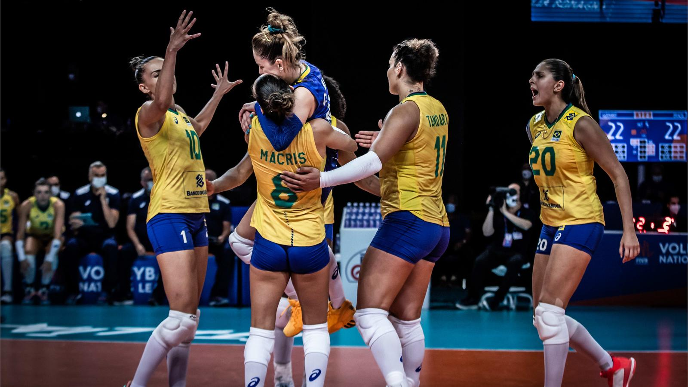
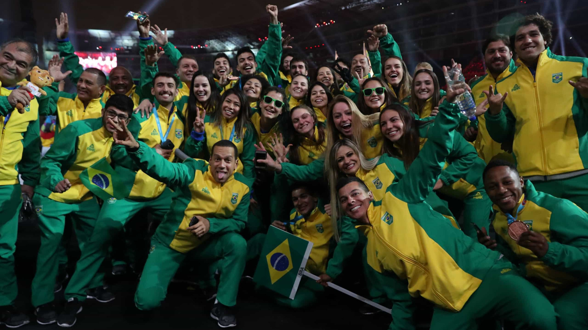

Equipe brasileira conquista o ouro no Campeonato Mundial de Vôlei
A seleção brasileira de vôlei brilhou mais uma vez ao conquistar o título de campeã no Campeonato Mundial de Vôlei, realizado na cidade de Roma, na Itália. Com uma campanha impecável, as jogadoras mostraram todo seu talento e garra em quadra.
Leia mais

Por Jorge Medeiro - Data de publicação: 26/06/2023
São Paulo sediará os Jogos Pan-Americanos de 2027
A cidade de São Paulo foi escolhida como sede dos Jogos Pan-Americanos de 2027. A decisão foi anunciada pela Panam Sports, entidade responsável pela organização do evento, e representa um marco importante para o esporte brasileiro.
Leia mais

Por Emerson Jake - Data de publicação: 27/06/2023
Tenista brasileira alcança as quartas de final de um Grand Slam pela primeira vez
O tênis brasileiro celebra uma conquista histórica com a performance excepcional da tenista brasileira Ana Silva, que alcançou as quartas de final de um Grand Slam pela primeira vez em sua carreira.
Leia mais

Por Amelia Albuquerque - Data de publicação: 29/06/2023